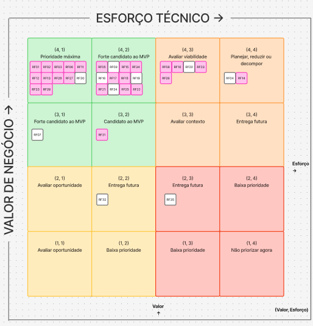

Atividade 4 - Priorização dos requisitos e definição do MVP
1. Avaliação do valor de negócio
Durante a reunião foi apurado a pontuação de valor de negócio baseado na medida MoSCoW adaptado de 1 a 4 juntamente ao cliente.
1.1 Critérios e escala de avaliação
| Pontuação | Classificação | Interpretação |
|---|---|---|
| 4 | Must have | Requisito indispensável para atender uma necessidade central do IBRADA, viabilizar um fluxo principal do produto, atender obrigação relevante ou permitir o funcionamento de outras funcionalidades. |
| 3 | Should have | Requisito importante e com impacto significativo, mas cuja ausência temporária não impede o funcionamento dos principais fluxos do produto. |
| 2 | Could have | Requisito que agrega valor à solução, porém pode ser implementado posteriormente sem comprometer os objetivos principais da primeira versão. |
| 1 | Won't have now | Requisito de baixo valor para o momento atual, podendo ser planejado para versões futuras sem impacto relevante sobre o funcionamento inicial da solução. |
1.2 Avaliação dos Requisitos Funcionais
| Código | Requisito | Relação | Valor de negócio | Classificação | Justificativa do cliente |
|---|---|---|---|---|---|
| RF01 | Cadastrar projetos | CP1 | 4 | Must have | É uma funcionalidade interessante para os gestores e para o público. |
| RF02 | Editar projetos | CP1 | 4 | Must have | É uma funcionalidade interessante para os gestores, complementar ao RF01. |
| RF03 | Remover projetos | CP1 | 4 | Must have | É uma funcionalidade interessante para os gestores, complementar ao RF01. |
| RF04 | Exibir dashboard de impacto | CP1 | 4 | Must have | É uma funcionalidade interessante para os gestores e para o público. |
| RF05 | Apresentar formulário de triagem | CP2 | 4 | Must have | Acelera o processo de comunicação. |
| RF06 | Visualizar catálogo de ecoturismo | CP3 | 4 | Must have | É a forma da instituição iniciar a oferta de pacotes de ecoturismo e beneficiar os agricultores relacionados. |
| RF07 | Detalhar experiências | CP3 | 3 | Should have | Atualmente já existem vídeos das trilhas que podem ser inseridos como conteúdo. Também seria um bom trabalho para voluntários. |
| RF08 | Cadastrar clientes | CP3 | 4 | Must have | É fundamental, pois o ecoturista possui o perfil de cliente do IBRADA. |
| RF09 | Editar perfil de clientes | CP3 | 4 | Must have | É fundamental, pois o ecoturista possui o perfil de cliente do IBRADA. |
| RF10 | Realizar login de cliente | CP3 | 4 | Must have | Complementar ao cadastro do cliente. |
| RF11 | Encerrar sessão de cliente | CP3 | 4 | Must have | Complementar ao cadastro do cliente. |
| RF12 | Selecionar pacote de ecoturismo | CP3 | 4 | Must have | Antes da compra, é essencial realizar a reserva do cliente. |
| RF13 | Confirmar reserva | CP3 | 4 | Must have | O cliente deve poder verificar as informações antes de concluir sua reserva. |
| RF14 | Pagar reserva | CP3 | 4 | Must have | É a primeira ligação comercial que o cliente terá com o IBRADA. |
| RF15 | Cadastrar experiências de ecoturismo | CP3 | 4 | Must have | É importante para que a equipe do IBRADA possa cadastrar novas experiências planejadas. |
| RF16 | Editar experiências de ecoturismo | CP3 | 4 | Must have | Caso similar ao RF15. |
| RF17 | Alterar disponibilidade de experiência de ecoturismo | CP3 | 4 | Must have | Sempre há um limite de vagas para as experiências. |
| RF18 | Cadastrar oportunidades de voluntariado | CP4 | 4 | Must have | Sem o cadastro das oportunidades, não é possível iniciar o relacionamento entre o IBRADA e o voluntário. É uma porta de entrada para esse relacionamento. |
| RF19 | Editar oportunidades de voluntariado | CP4 | 4 | Must have | É importante porque as oportunidades podem sofrer alterações após serem publicadas. |
| RF20 | Gerenciar papel de gestor | CP4 | 4 | Must have | Dependendo do envolvimento do usuário com as operações do IBRADA, é importante ampliar seu acesso às operações do sistema quando necessário. |
| RF21 | Listar oportunidades de voluntariado | CP4 | 4 | Must have | Caso similar ao RF18, sendo importante para estabelecer o relacionamento com os voluntários. |
| RF22 | Visualizar detalhes de oportunidade de voluntariado | CP4 | 4 | Must have | Caso similar à necessidade de detalhamento presente no RF06. |
| RF23 | Cadastrar perfil do voluntário | CP4 | 4 | Must have | Importante para que os gestores possam analisar de forma ágil possíveis voluntários. |
| RF24 | Editar perfil do voluntário | CP4 | 4 | Must have | Caso similar ao RF09. |
| RF25 | Candidatar-se a oportunidade | CP4 | 4 | Must have | É uma expectativa do voluntário poder se candidatar a uma oportunidade disponível. |
| RF26 | Realizar login de voluntário | CP4 | 4 | Must have | Complementar ao cadastro de voluntário. |
| RF27 | Encerrar sessão de voluntários | CP4 | 4 | Must have | Complementar ao cadastro de voluntário. |
| RF28 | Visualizar candidatos | CP4 | 4 | Must have | É um facilitador para a equipe do IBRADA durante a análise dos candidatos. |
| RF29 | Registrar consentimento de uso de dados | CP4 | 4 | Must have | Trata-se de uma exigência legal relacionada ao tratamento de dados pessoais. |
| RF30 | Configurar preferências de notificação | CP5 | 4 | Must have | O usuário deve poder modificar suas preferências e decidir quais notificações deseja receber. |
| RF31 | Exibir estatísticas de alcance das notificações | CP5 | 3 | Should have | É importante para que a equipe do IBRADA possa analisar o alcance e o processo de comunicação dos projetos. |
| RF32 | Gerenciar envio de notificações | CP5 | 2 | Could have | É uma funcionalidade interessante, mas pode ser implementada posteriormente. |
| RF33 | Preencher solicitação de parceria | CP6 | 4 | Must have | O IBRADA não trabalha apenas com clientes, mas também com parceiros. É importante possuir um contato inicial organizado com potenciais parceiros. |
| RF34 | Visualizar propostas de parceria | CP6 | 4 | Must have | É essencial para que a equipe do IBRADA possa visualizar e analisar as possíveis parcerias. |
| RF35 | Enviar resposta de solicitação de parceria | CP6 | 2 | Could have | É uma funcionalidade interessante, mas não é necessária em todos os casos. |
A avaliação do cliente demonstrou uma concentração dos requisitos na categoria Must have, refletindo a percepção de que grande parte das funcionalidades contribui diretamente para os principais fluxos da solução.
Nenhum requisito recebeu valor de negócio 1 — Won't have now nesta avaliação.
2. Avaliação do Esforço Técnico
A avaliação técnica dos requisitos funcionais foi realizada pela equipe do projeto considerando três critérios: esforço necessário para implementação, complexidade técnica e lacuna de capacidade da equipe.
Cada critério foi avaliado em uma escala de 1 a 4, orientada de modo que valores maiores representem maior dificuldade para implementação.
2.1 Critérios e escalas de avaliação
| Pontuação | Interpretação | Descrição |
|---|---|---|
| 1 | Esforço baixo | Até 2 horas |
| 2 | Esforço moderado | Entre 2 e 6 horas |
| 3 | Esforço alto | Entre 6 e 12 horas |
| 4 | Esforço muito alto | Mais de 12 horas |
| Pontuação | Interpretação |
|---|---|
| 1 | Utiliza solução conhecida, com poucas dependências |
| 2 | Exige alguma investigação ou integração |
| 3 | Possui várias dependências ou incertezas técnicas |
| 4 | Apresenta elevada incerteza, integração crítica ou tecnologia não dominada |
| Pontuação | Interpretação |
|---|---|
| 1 | A equipe domina plenamente os conhecimentos necessários |
| 2 | A equipe possui conhecimento suficiente, com pouca aprendizagem adicional |
| 3 | A equipe precisa desenvolver conhecimentos relevantes |
| 4 | A equipe ainda não possui os conhecimentos ou recursos necessários |
- Consolidação do esforço técnico
Para consolidar os três critérios em uma única medida, foi utilizada a média aritmética:
Esforço técnico = (Esforço + Complexidade + Lacuna de capacidade) / 3
O resultado é apresentado em escala de 1 a 4, mantendo uma casa decimal quando necessário.
3. Consolidação das Avaliações
Após a avaliação do valor de negócio, realizada com a participação do cliente, e da avaliação do esforço técnico, realizada pela equipe do projeto, os resultados foram reunidos em uma única tabela.
| Código | Requisito | Relação | Esforço | Complexidade | Lacuna de capacidade | Esforço técnico consolidado |
|---|---|---|---|---|---|---|
| RF01 | Cadastrar projetos | CP1 | 1 | 1 | 2 | 1,3 |
| RF02 | Editar projetos | CP1 | 1 | 1 | 2 | 1,3 |
| RF03 | Remover projetos | CP1 | 1 | 1 | 2 | 1,3 |
| RF04 | Exibir dashboard de impacto | CP1 | 4 | 3 | 4 | 3,6 |
| RF05 | Apresentar formulário de triagem | CP2 | 2 | 2 | 2 | 2,0 |
| RF06 | Visualizar catálogo de ecoturismo | CP3 | 2 | 1 | 1 | 1,3 |
| RF07 | Detalhar experiências | CP3 | 2 | 1 | 1 | 1,3 |
| RF08 | Cadastrar clientes | CP3 | 3 | 3 | 2 | 2,6 |
| RF09 | Editar perfil de clientes | CP3 | 2 | 2 | 2 | 2,0 |
| RF10 | Realizar login de cliente | CP3 | 3 | 3 | 2 | 2,6 |
| RF11 | Encerrar sessão de cliente | CP3 | 1 | 1 | 1 | 1,0 |
| RF12 | Selecionar pacote de ecoturismo | CP3 | 2 | 1 | 1 | 1,3 |
| RF13 | Confirmar reserva | CP3 | 1 | 1 | 1 | 1,0 |
| RF14 | Pagar reserva | CP3 | 4 | 4 | 4 | 4,0 |
| RF15 | Cadastrar experiências de ecoturismo | CP3 | 2 | 2 | 2 | 2,0 |
| RF16 | Editar experiências de ecoturismo | CP3 | 2 | 2 | 2 | 2,0 |
| RF17 | Alterar disponibilidade de experiência de ecoturismo | CP3 | 1 | 2 | 2 | 1,6 |
| RF18 | Cadastrar oportunidades de voluntariado | CP4 | 2 | 2 | 2 | 2,0 |
| RF19 | Editar oportunidades de voluntariado | CP4 | 2 | 2 | 2 | 2,0 |
| RF20 | Gerenciar papel de gestor | CP4 | 3 | 3 | 2 | 2,6 |
| RF21 | Listar oportunidades de voluntariado | CP4 | 1 | 2 | 2 | 1,6 |
| RF22 | Visualizar detalhes de oportunidade de voluntariado | CP4 | 2 | 2 | 1 | 1,7 |
| RF23 | Cadastrar perfil do voluntário | CP4 | 3 | 3 | 2 | 2,6 |
| RF24 | Editar perfil do voluntário | CP4 | 2 | 2 | 2 | 2,0 |
| RF25 | Candidatar-se a oportunidade | CP4 | 2 | 2 | 2 | 2,0 |
| RF26 | Realizar login de voluntário | CP4 | 3 | 3 | 2 | 2,6 |
| RF27 | Encerrar sessão de voluntários | CP4 | 1 | 1 | 1 | 1,0 |
| RF28 | Visualizar candidatos | CP4 | 2 | 1 | 1 | 1,3 |
| RF29 | Registrar consentimento de uso de dados | CP4 | 1 | 1 | 1 | 1,0 |
| RF30 | Configurar preferências de notificação | CP5 | 1 | 1 | 1 | 1,0 |
| RF31 | Exibir estatísticas de alcance das notificações | CP5 | 2 | 2 | 3 | 2,3 |
| RF32 | Gerenciar envio de notificações | CP5 | 1 | 2 | 2 | 1,6 |
| RF33 | Preencher solicitação de parceria | CP6 | 1 | 1 | 1 | 1,0 |
| RF34 | Visualizar propostas de parceria | CP6 | 2 | 2 | 1 | 1,6 |
| RF35 | Enviar resposta de solicitação de parceria | CP6 | 3 | 3 | 3 | 3,0 |
4. Construção da matriz 4 × 4
Após a consolidação das avaliações de valor de negócio e esforço técnico, os requisitos funcionais foram posicionados em uma matriz 4 × 4, permitindo visualizar conjuntamente a importância de cada requisito para o negócio e o esforço necessário para sua implementação.
Para o posicionamento no eixo horizontal, o esforço técnico consolidado foi convertido para a escala de 1 a 4 conforme o valor obtido na avaliação técnica:
| Esforço técnico consolidado | Posição na matriz |
|---|---|
| 1,0 a 1,4 | 1 — Baixo |
| 1,5 a 2,4 | 2 — Moderado |
| 2,5 a 3,4 | 3 — Alto |
| 3,5 a 4,0 | 4 — Muito alto |
O eixo vertical representa o valor de negócio, avaliado junto ao cliente, enquanto o eixo horizontal representa o esforço técnico, avaliado pela equipe.
| Valor de negócio ↓ / Esforço técnico → | 1 — Baixo | 2 — Moderado | 3 — Alto | 4 — Muito alto |
|---|---|---|---|---|
| 4 — Muito alto | RF01, RF02, RF03, RF06, RF11, RF12, RF13, RF27, RF28, RF29, RF30, RF33 | RF05, RF09, RF15, RF16, RF17, RF18, RF19, RF21, RF22, RF24, RF25, RF34 | RF08, RF10, RF20, RF23, RF26 | RF04, RF14 |
| 3 — Alto | RF07 | RF31 | — | — |
| 2 — Moderado | — | RF32 | RF35 | — |
| 1 — Baixo | — | — | — | — |
Em rosa são os que posteriormente entraram no MVP do produto.
imagem abaixo para controle de versão (última atualização 28/09/2026)

A matriz será utilizada como apoio à definição do MVP, em conjunto com a análise das dependências entre requisitos, formação de fluxos completos de uso, riscos técnicos, prazo disponível e manifestação do cliente.
5. Definição dos RFs do MVP
Após a construção da matriz de valor de negócio × esforço técnico, foi realizada uma seleção preliminar dos requisitos funcionais que poderão compor o MVP.
A seleção não considerou apenas a posição individual dos requisitos na matriz. Também foram analisados outros quesitos. Dessa forma, requisitos de maior esforço não foram automaticamente descartados quando necessários para completar um fluxo essencial do sistema.
| CP | RFs preliminares | Justificativa |
|---|---|---|
| Gestão e Transparência de Projetos | RF01, RF02, RF03 | Os três requisitos permitem que os gestores realizem a manutenção básica dos projetos, possibilitando cadastrar, editar e remover informações. Todos possuem valor de negócio 4 e esforço técnico consolidado 1,3, estando no quadrante de prioridade máxima da matriz. |
| Canal Unificado de Atendimento e Triagem | RF05 | O requisito permite receber a necessidade apresentada pelo visitante e realizar seu encaminhamento inicial. Possui valor de negócio 4 e esforço técnico 2,0, posicionando-se como forte candidato ao MVP. |
| Módulo Transacional de Ecoturismo | RF06, RF08, RF10, RF11, RF12, RF13, RF14, RF15, RF17 | O conjunto forma um fluxo mínimo envolvendo cadastro da experiência → visualização → cadastro do cliente → autenticação → seleção → confirmação da reserva → pagamento. A maior parte dos requisitos possui valor de negócio 4 e está em quadrantes favoráveis à entrada no MVP. O RF14 — Pagar reserva, apesar de possuir esforço técnico 4, foi mantido preliminarmente por fazer parte do fluxo transacional considerado importante pelo cliente. |
| Gestão do Ciclo de Voluntariado | RF18, RF21, RF22, RF23, RF25, RF26, RF27, RF28, RF29 | O conjunto permite estabelecer um fluxo mínimo de cadastro da oportunidade → descoberta da oportunidade → cadastro do perfil → autenticação → candidatura → visualização dos candidatos pelo gestor, incluindo o registro de consentimento de uso de dados. |
| Sistema de Notificações e Engajamento | RF31 | O módulo de notificações apresenta menor participação no MVP preliminar, pois não é necessário para viabilizar os principais fluxos de projetos, ecoturismo, voluntariado e parcerias. O RF31 foi mantido como possibilidade preliminar por possuir valor de negócio 3 e esforço técnico 2,3, devendo sua permanência ser avaliada conforme a capacidade disponível da equipe. |
| Gestão de Solicitações de Parcerias | RF33, RF34 | Os dois requisitos estabelecem o fluxo mínimo em que o parceiro envia uma solicitação → a equipe do IBRADA visualiza a proposta recebida. RF33 possui valor 4 e esforço 1,0, enquanto RF34 possui valor 4 e esforço 1,6, tornando o fluxo compatível com a proposta do MVP. |
Requisitos não selecionados para o MVP preliminar
Os requisitos abaixo não foram selecionados neste primeiro recorte do MVP. A exclusão não significa que eles não possuam valor para o produto, mas que podem ser postergados sem inviabilizar os fluxos mínimos definidos nesta etapa.
| RF | Requisito | Valor de negócio | Esforço técnico | Justificativa para não inclusão no MVP preliminar |
|---|---|---|---|---|
| RF04 | Exibir dashboard de impacto | 4 | 3,6 | Apesar do alto valor de negócio, possui um dos maiores esforços técnicos da lista. Na matriz, requisitos de valor 4 e esforço muito alto devem ter sua viabilidade analisada, podendo ser reduzidos ou decompostos. A funcionalidade pode ser incorporada após a estrutura básica de gestão dos projetos. |
| RF07 | Detalhar experiências | 3 | 1,3 | Possui baixo esforço, mas valor de negócio 3. A visualização inicial das experiências já é possibilitada pelo RF06, permitindo que detalhes adicionais e mecanismos de compartilhamento sejam incorporados posteriormente. |
| RF09 | Editar perfil de clientes | 4 | 2,0 | Apesar do valor de negócio alto e do esforço moderado, não é indispensável para validar inicialmente o fluxo de cadastro, autenticação e reserva do cliente. |
| RF16 | Editar experiências de ecoturismo | 4 | 2,0 | Possui valor 4 e esforço moderado, porém o RF15 já permite o cadastro inicial das experiências necessárias para validar o fluxo. A edição pode ser incorporada posteriormente. |
| RF19 | Editar oportunidades de voluntariado | 4 | 2,0 | Possui valor de negócio 4, porém o RF18 já permite cadastrar oportunidades e iniciar a validação do processo de voluntariado. A edição das oportunidades pode ser acrescentada em uma entrega posterior. |
| RF20 | Gerenciar papel de gestor | 4 | 2,6 | Possui alto valor de negócio, mas esforço técnico elevado em relação a outros requisitos selecionados. No MVP preliminar, o fluxo pode operar inicialmente com gestores previamente definidos, adiando o gerenciamento dinâmico dos papéis. |
| RF24 | Editar perfil do voluntário | 4 | 2,0 | Embora possua valor 4, o cadastro do perfil por meio do RF23 é suficiente para testar inicialmente o fluxo de candidatura do voluntário. |
| RF30 | Configurar preferências de notificação | 4 | 1,0 | Apesar do alto valor de negócio e baixo esforço técnico, depende de um fluxo de notificações mais completo. Como esse módulo não é central aos principais fluxos selecionados para o MVP, sua implementação pode acompanhar a evolução posterior do sistema de notificações. |
| RF32 | Gerenciar envio de notificações | 2 | 1,6 | Possui valor de negócio 2 e foi considerado pelo cliente uma funcionalidade que pode ser adiada. Dessa forma, mesmo apresentando esforço técnico moderado, perde prioridade em relação aos principais fluxos do produto. |
| RF35 | Enviar resposta de solicitação de parceria | 2 | 3,0 | O cliente indicou que a resposta automática é interessante, porém não necessária em todos os casos. Além disso, o requisito apresenta esforço técnico alto, enquanto RF33 e RF34 já possibilitam um fluxo mínimo de envio e visualização das solicitações de parceria. |
5.3 Composição preliminar do MVP
A seleção preliminar resulta em 25 requisitos funcionais incluídos no MVP e 10 requisitos direcionados inicialmente para entregas posteriores.
Os requisitos preliminarmente selecionados são:
RF01, RF02, RF03, RF05, RF06, RF08, RF10, RF11, RF12, RF13, RF14, RF15, RF17, RF18, RF21, RF22, RF23, RF25, RF26, RF27, RF28, RF29, RF31, RF33 e RF34.
Os requisitos inicialmente deixados para entregas futuras são:
RF04, RF07, RF09, RF16, RF19, RF20, RF24, RF30, RF32 e RF35.
6. Tratamento dos RNFs
Os requisitos não funcionais foram analisados separadamente dos requisitos funcionais, uma vez que não são posicionados individualmente na matriz de valor de negócio × esforço técnico.
Para determinar sua aplicação ao MVP, os RNFs foram classificados nas seguintes categorias:
- Obrigatório para o MVP: necessário para garantir segurança, privacidade, legislação, operação ou um nível mínimo de qualidade do produto;
- Associado a RFs do MVP: aplicável diretamente a uma ou mais funcionalidades selecionadas para o MVP;
- Evolutivo: requisito cuja implementação ou nível de atendimento pode ser aprimorado em entregas posteriores;
- Não aplicável ao MVP: relacionado exclusivamente a funcionalidades que não fazem parte do escopo definido para o MVP.
A análise considerou os RFs preliminarmente selecionados, as CPs às quais cada RNF está relacionado e a necessidade de garantir condições mínimas de segurança, confiabilidade e utilização da solução.
6.1 Classificação dos RNFs
| RNF | Requisito | Tratamento no MVP | RFs / CPs relacionados | Justificativa |
|---|---|---|---|---|
| RNF01 | Responsividade da interface | Obrigatório para o MVP | Transversal — todas as CPs | A responsividade constitui uma condição mínima de utilização da aplicação nos três grupos de dispositivos definidos pelo requisito: smartphones, tablets e desktops. |
| RNF02 | Integridade transacional | Associado a RFs do MVP | RF12, RF13, RF14 / CP3 | O fluxo de reserva e pagamento faz parte do MVP. Portanto, é necessário impedir reservas concorrentes para uma mesma vaga e evitar situações de overbooking ou inconsistência na disponibilidade. |
| RNF03 | Desempenho do catálogo | Associado a RFs do MVP | RF06 / CP1, CP3 | O catálogo de experiências de ecoturismo está presente no MVP por meio do RF06. Dessa forma, o limite de carregamento definido pelo RNF deve ser considerado nessa funcionalidade. A parte referente às listagens públicas de projetos deverá acompanhar a evolução desse fluxo. |
| RNF04 | Autenticação e autorização | Obrigatório para o MVP | CP1, CP3, CP4 e CP6 | O MVP possui funcionalidades destinadas aos gestores e funcionalidades destinadas ao público. Portanto, é necessário restringir as rotas de gerenciamento a usuários autenticados e autorizados como Gestor. |
| RNF05 | Integração Externa | Associado a RFs do MVP | RF14 / CP3 | O pagamento de reservas foi selecionado para o MVP e envolve integração externa. Dessa forma, o processamento das notificações recebidas via webhook e o tratamento de falhas dessa comunicação devem acompanhar esse fluxo. |
| RNF06 | Escalabilidade sob demanda | Evolutivo | CP1, CP3 e CP5 | A capacidade de suportar 200 usuários simultâneos, mantendo os limites definidos de tempo de resposta e taxa de erro, poderá ser avaliada e aprimorada em entregas posteriores conforme o crescimento da utilização do produto. |
| RNF07 | Disponibilidade do sistema | Obrigatório para o MVP | Transversal — todas as CPs | Como o MVP disponibilizará funcionalidades públicas, a disponibilidade mínima estabelecida para a plataforma deve ser considerada desde sua implantação. O requisito também define as condições para realização de manutenções programadas. |
| RNF08 | Proteção de dados pessoais (LGPD) | Obrigatório para o MVP | CP3, CP4 e CP6 | O MVP realiza coleta e armazenamento de dados de clientes, voluntários e usuários envolvidos nos fluxos selecionados. Portanto, os mecanismos de proteção dos dados em repouso e em trânsito devem estar presentes desde a primeira versão. |
| RNF09 | Usabilidade do formulário de triagem | Associado a RFs do MVP | RF05 / CP2 | O formulário de triagem faz parte do MVP. Dessa forma, devem ser observadas as condições de utilização definidas pelo RNF, incluindo a possibilidade de preenchimento sem criação de conta e a meta estabelecida de conclusão do formulário. |
| RNF10 | Compatibilidade entre navegadores | Obrigatório para o MVP | Transversal — todas as CPs | O MVP deve manter funcionamento e apresentação equivalentes nas duas últimas versões estáveis dos navegadores definidos no requisito: Chrome, Firefox, Safari e Edge. |
6.2 RNFs aplicáveis ao MVP
Com base na análise realizada, os RNFs foram agrupados da seguinte forma:
| Classificação | RNFs |
|---|---|
| Obrigatórios para o MVP | RNF01, RNF04, RNF07, RNF08, RNF10 |
| Associados a RFs do MVP | RNF02, RNF03, RNF05, RNF09 |
| Evolutivos | RNF06 |
| Não aplicáveis ao MVP | Nenhum |
Todos os requisitos não funcionais possuem alguma relação com funcionalidades ou características de produto presentes no MVP. Por esse motivo, nenhum RNF foi classificado como não aplicável.
7. Validação do MVP
Infelizmente a validação não foi possível ser realizada ainda. Como as atividades foram enviadas na última semana só conseguimos uma reunião com cliente.
Ainda pretendemos finalizar a validação do MVP na nossa próxima reunião no dia (04/10/2026).